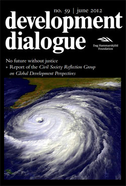

|
Der Gipfel der Enttäuschung
Die Rio+20-Konferenz ist vorbei. Und nun? Die Bündnis-Mitglieder blicken nach vorn |
Es war der Gipfel der unerledigten Aufgaben. Aus Sicht des Bündnis Entwicklung Hilft endete die UN-Konferenz für Nachhaltige Entwicklung in Rio de Janeiro am 22. Juni 2012 mit einer großen Enttäuschung. Das Abschlussdokument, das bereits vor Beginn des Gipfels vorlag, ist für die Bündnis-Mitglieder nicht weitreichend genug und zu unverbindlich. Besonders enttäuschend: In zentralen Fragen sind Entscheidungen auf die lange Bank geschoben worden.
Danuta Sacher, Vorstandsvorsitzende von terre des hommes, zählt die Versäumnisse auf: „Sie wollten ein hochrangiges politisches Forum für nachhaltige Entwicklung gründen, haben die Entscheidung über Form und Mandat jedoch auf die Zukunft vertagt. Sie wollten globale Nachhaltigkeitsziele verabschieden, tun das aber erst in drei Jahren. Sie wollten das ganze System der Finanzierung nachhaltiger Entwicklung überprüfen, aber gründen dafür erst einmal einen Arbeitskreis.“
Zwar wurde in Vorab-Verhandlungen monatelang über das Konzept der so genannten „Green Economy“ diskutiert, der Gipfel brachte jedoch letztlich nicht eine einzige Initiative im Bereich der sozialen Nachhaltigkeit hervor. „Im Abschlussdokument findet sich unter dem Abschnitt ‚Armutsbekämpfung’ nicht viel mehr als der Hinweis auf anhaltendes Wachstum“, kritisiert Bischof Werner Thissen von Misereor.
„Wie aber Wachstum besonders den Menschen, die in Armut leben, dienen und zugleich auch die Grenzen des Planeten respektieren kann, bleibt völlig offen.“ Verantwortungslos langsam sei der globale Verhandlungsprozess zur Nachhaltigkeit, ergänzt Klimaexperte Michael Kühn von der Welthungerhilfe. Sein Appell: „Wir dürfen uns damit nicht zufrieden geben!“
Doch noch gibt es Handlungsspielraum, wie die Bündnis-Mitglieder unisono bekunden. Die Gesellschaft müsse weiterhin und verstärkt Druck ausüben, damit die Politik sich bewegt und die Verbindlichkeit einfordern, die in Rio gefehlt hat. Die Direktorin von Brot für die Welt Cornelia Füllkrug-Weitzel betont: „In den nächsten Jahren müssen nachhaltige Entwicklungsziele für alle Länder bestimmt werden. Dazu werden wir mit unseren Partnern beitragen. Die Bundesregierung fordern wir auf, Transformationsprozesse in Entwicklungsländern stärker zu unterstützen.“
In der Erklärung von Brot für die Welt heißt es weiter: „Die Energiewende in Deutschland, das Erreichen der Millenniumsziele und der Kampf gegen globale Ungerechtigkeit, das sind Aufgaben, die wir nicht einfach liegen lassen, nur weil die globale Konferenzdiplomatie wieder einmal auf der Stelle tritt.“
Angesichts des Klimawandels und einer immer stärkeren Zerstörung der natürlichen Lebensgrundlagen ist schnelles Handeln dringend nötig. In den vergangenen Jahren haben die Häufigkeit und die Intensität extremer Naturereignisse erschreckend zugenommen. Die Zahl der gemeldeten Katastrophen hat sich seit 1980 verdreifacht. Und durch Armut, Landraub und Bevölkerungswachstum siedeln immer mehr Menschen an gefährdeten Orten. Steilhänge und ungeschützte Küstenstreifen werden aus der Not heraus besiedelt.
„Dass die Verhandlungen in Rio hier nicht zu Konsequenzen geführt haben, ist ein großer Fehler“, betont Peter Mucke, Geschäftsführer des Bündnis Entwicklung Hilft. Die Entwicklung einer „Grünen Sozialen Marktwirtschaft“ sei die maßgebliche Zukunftsaufgabe. „Dazu gehört neben wirtschaftlicher Entwicklung in gleichem Maße soziale Gerechtigkeit, Schutz der Menschen vor Gefahren und der Schutz der natürlichen Lebensgrundlagen.“
terre des hommes ist Mitglied im "Bündnis Entwicklung Hilft", einem Zusammenschluss deutscher Hilfswerke für akute Nothilfe und langfristige Entwicklungszusammenarbeit. |
»Gipfel der unerledigten Aufgaben«
Zum Abschluss der UN-Nachhaltigkeitskonferenz in Rio des Janeiro |
Heute endet in Rio die UN-Konferenz für Nachhaltige Entwicklung mit der Verabschiedung des Abschlussdokumentes, das bereits vor Beginn des Gipfels vorlag. »Zweifellos sind die Ergebnisse des Gipfels enttäuschend und den drängenden Herausforderungen überhaupt nicht angemessen«, erklärt Danuta Sacher, Vorstandsvorsitzende von terre des hommes. »Die Regierungen haben in zentralen Fragen ihre Entscheidungen auf die lange Bank geschoben. Sie wollen ein hochrangiges politisches Forum für nachhaltige Entwicklung gründen, vertagen die Entscheidung über Form und Mandat jedoch auf die Zukunft. Sie wollen globale Nachhaltigkeitsziele verabschieden, aber erst in drei Jahren. Sie wollen das ganze System der Finanzierung nachhaltiger Entwicklung überprüfen, aber gründen dafür erst einmal einen Arbeitskreis. Damit besteht zumindest die Chance, dass bis 2015 das gesamte System der internationalen Entwicklungszusammenarbeit generalüberholt wird. Die jetzige Rio-Konferenz hat mehr als deutlich gezeigt, wie bitter notwendig das ist.«
Jens Martens, Geschäftsführer des Global Policy Forum Europe erklärt: »Bei diesem Gipfel wurden die veränderten Kräfteverhältnisse in der Weltpolitik sichtbar. Dazu braucht man nur auf das Abschlussfoto zu schauen: Dort sieht man die Staats- und Regierungschefs der neuen starken Länder wie China, Indien und Brasilien. Bundeskanzlerin Merkel und viele ihrer europäischen Kollegen glänzen ebenso wie die USA durch Abwesenheit. Wer nicht einmal zu einem Zwischenstopp auf dem Rückweg vom G20-Gipfel in Mexiko bereit ist, demonstriert damit politisches Desinteresse an der Lösung der globalen Zukunftsprobleme im Rahmen der UNO.«
terre des hommes hat den Nachhaltigkeitsgipfel aus der Perspektive der Kinderrechte begleitet und sich als Kinderrechtsorganisation im Vorfeld des Gipfels insbesondere für die Einrichtung von Ombudsstellen für die Rechte zukünftiger Generationen eingesetzt. Danuta Sacher stellt dazu fest: »Es ist enttäuschend, dass dieser Vorschlag nur abgeschwächt im Abschlussdokument von Rio enthalten ist. Die Bundesregierung hatte diese Initiative erfreulicher Weise unterstützt und ist nun aufgefordert, dieses Konzept zunächst in Deutschland zu verwirklichen.« |
Politik und Wirtschaft müssen nachlegen im Kampf gegen die Ausbeutung von Kindern
Bessere Kontrolle globaler Wertschöpfungsketten und Bildungszugang für Kinder sind der Schlüssel |
Anlässlich des Welttages gegen Kinderarbeit am 12. Juni fordert das internationale Kinderhilfswerk terre des hommes stärkere Anstrengungen von Politik und Wirtschaft im Kampf gegen die Ausbeutung von Kindern. Weltweit gibt es nach Angaben der Internationalen Arbeitsorganisation (ILO) 215 Millionen Kinderarbeiter. Unter ihnen sind 74 Millionen Jungen und 41 Millionen Mädchen, die unter ausbeuterischen Bedingungen in Steinbrüchen und auf Plantagen schuften oder als Arbeitssklaven gehalten werden. »Diese trockenen Zahlen stehen für die millionenfache Ausbeutung von Kindern, deren Kindheit zerstört wird, die selten oder nie zur Schule gehen und niemals Zeit zum Spielen haben«, sagte Danuta Sacher, Vorstandsvorsitzende von terre des hommes. »Fortschritte im Kampf gegen Kinderarbeit sind überall dort feststellbar, wo Regierungen Schutzgesetze gegen Kinderarbeit erlassen und deren Einhaltung kontrollieren, und dort, wo international tätige Unternehmen ihre Lieferketten kontrollieren.«
So hat das Engagement der indischen terre des hommes-Partner im Textilzentrum Tirupur deutlich dazu beigetragen, dass sklavenähnliche Arbeitsbedingungen wie das Sumangali-System Schritt für Schritt abgeschafft werden. Sumangali-System bedeutet, dass Mädchen dazu gezwungen werden, in Baumwollspinnereien zu schuften, um Geld für ihren Brautpreis zu verdienen. Textilunternehmen, die ernsthaft gegen Kinderarbeit vorgehen wollen, müssen ihre Lieferketten bis in die erste Baumwollspinnerei transparent machen und sicherstellen, dass dort keine Ausbeutung stattfindet. »Das erwarten wir auch von der kürzlich von den weltweit größten Textilunternehmen gegründeten Sustainable Apparel Coalition, wenn sie nicht nur positive Schlagzeilen für die Nachhaltigkeitsberichte der beteiligten Unternehmen, sondern wirklichen sozialen Fortschritt vor Ort bringen soll. Kunden und Verbraucher können durch genaue Nachfragen nach den Herstellungsbedingungen der Textilien beim Kauf von Kleidung dieses Anliegen unterstützen«, sagte Danuta Sacher.
In gleicher Weise sind kostenloser Schulbesuch, guter Unterricht, qualifizierte und motivierte Lehrer sowie Stipendienprogramme für die Familien die beste Gewähr für Erfolge im Kampf gegen Kinderarbeit. Durch derartige Maßnahmen ist es gelungen, die Zahl von Kindern, die keine Schule besuchen, in den letzten zehn Jahren immerhin von 100 Millionen auf heute 70 Millionen zu reduzieren.
Weitere Informationen:
|
»Keine Zukunft ohne Gerechtigkeit«
Civil Society Reflection Group veröffentlicht Bericht |
Eine Gruppe von 18 Aktivist/innen der Zivilgesellschaft und Wissenschaftler/innen aus aller Welt veröffentlicht heute einen gemeinsamen Bericht mit dem Titel »No future without justice«. Zwei Wochen vor der UN-Konferenz über nachhaltige Entwicklung (Rio +20), verlangt der Bericht wesentliche politische Veränderungen, um die grundlegenden Ursachen der vielfältigen Krisen der Welt zu überwinden. Die Gruppe fordert:
»Die Regierungen müssen endlich Lehren aus den globalen Krisen ziehen, die konventionellen Entwicklungskonzepte und –ziele hinterfragen und die Modelle und Maßstäbe für Entwicklung und sozialen Fortschritt überdenken – im Norden wie im Süden. Rio+20 und die aufkommenden Diskussionen über eine globale Entwicklungsagenda nach dem Jahr 2015 bieten einmalige Gelegenheiten, das gegenwärtige Entwicklungsparadigma zu überwinden und Strategien für einen ganzheitlichen, rechtebasierten Entwicklungsansatz zu entwickeln.«
„Die Regierungen haben es bisher versäumt, ihre Politik in Einklang mit den vereinbarten Grundsätzen der Nachhaltigkeit und der Menschenrechte zu bringen. Stattdessen ist die Politik viel zu oft sektoral fragmentiert und weiterhin durch ein übermäßiges Vertrauen in das Wirtschaftswachstum und die Selbstregulierung der Märkte gekennzeichnet. Neue Konzepte wie ‚grünes Wachstum‘ sind bestenfalls Versuche, die Symptome der Probleme anzugehen, ohne ihre Ursachen zu bewältigen. Stattdessen sind grundlegenden Veränderungen auf drei Ebenen notwendig:
- Wandel der Denkweisen, der Leitbegriffe und Indikatoren von Entwicklung und Fortschritt.
- Wandel in der Wirtschafts-, Finanz-, Umwelt- und Sozialpolitik, um soziale Ungleichheiten und die Zerstörung der Natur zu überwinden und nachhaltiges Wirtschaften zu stärken.
- Wandel von Institutionen und Governance-Mechanismen auf nationaler und internationaler Ebene.«
Die Civil Society Reflection Group on Global Development Perspectives (so der offizielle Name der Gruppe) unterbreitet in ihrem Report konkrete Vorschläge für fiskalische und regulatorische Reformen. Die Gruppe fordert eine substantielle Stärkung demokratischer Governance auf nationaler und globaler Ebene und formuliert Rahmenbedingungen und Prinzipien für Globale Nachhaltigkeitsziele (Global Sustainability Goals).
Der vollständige Bericht ist in der Serie Development Dialogue (Development Dialogue Nr. 59/Juni 2012) der Dag Hammarskjöld Foundation in Zusammenarbeit mit Social Watch, Third World Network, Development Alternatives with Women for a New Era (DAWN), der Friedrich-Ebert-Stiftung, Global Policy Forum und terre des hommes veröffentlicht. Der Bericht (in englischer Sprache) ist frei zugänglich unter:
www.globalpolicy.org/images/pdfs/dd59_web_optimised_single.pdf
Die Executive Summary des Reports ist wird von der Friedrich-Ebert-Stiftung in ihrer Reihe International Policy Analysis (Juni 2012) veröffentlicht und steht zum Download bereit (PDF-Dokument)
Der Report wird offiziell an der Konferenz der Vereinten Nationen für nachhaltige Entwicklung in Rio de Janeiro am Samstag, 16. Juni 2012, 11:30 Uhr, Raum T8, RIOCENTRO vorgestellt. Er wird auch gemeinsam mit dem ersten Global State of Civil Society Bericht von CIVICUS, am 17. Juni um 11:00 Uhr, auf der internationalen Buchmesse in Kapstadt vorgestellt.
Mitglieder der Civil Society Reflection Group on Global Development Perspectives:
Alejandro Chanona Burguete (UNAM, Mexiko), Barbara Adams (Global Policy Forum Europe, USA), Beryl d'Almeida (ABC, Zimbabwe), Chee Yoke Ling (Third World Network, China), Danuta Sacher (terre des hommes, Deutschland), Ernst Ulrich von Weizsäcker (International Resource Panel, Deutschland), Filomeno Santa Ana III (Action for Economic Reform, Philippinen), George Chira (terre des hommes, Indien), Josefa 'Gigi' Francisco (Development Alternatives with Women for the New Era, Philippinen), Henning Melber (Dag Hammarskjöld Foundation, Schweden), Hubert Schillinger (Friedrich-Ebert-Stiftung, Deutschland), Jorge Ishizawa (PRATEC, Peru), Dasho Karma Ura (Centre for Bhutan Studies, Bhutan), Roberto Bissio (Social Watch, Uruguay), Victoria Tauli-Corpuz (Tebtebba Foundation, Philippinen), Yao Graham (Third World Network Africa, Ghana), Jens Martens (Coordinator, Global Policy Forum Europe, Deutschland), Wolfgang Obenland (Assistant Coordinator, Global Policy Forum Europe, Deutschland). |
|
|
|
 Ansprechpartner Ansprechpartner
|
|
Wolfgang Deppisch
(Projektinfos)
Tel. 07222 / 32927
Heinz Wolf
(Sponsoring, Allgemeines)
Tel. 07225 / 75543
weitere Ansprechpartner
|
|
Erlöse
1992-2012
|
|

Jahr |
Euro |
1992 |
70.000 |
1993 |
75.600 |
1994 |
83.883 |
1995 |
69.617 |
1996 |
51.412 |
1997 |
61.749 |
1998 |
60.333 |
1999 |
68.742 |
2000 |
85.492 |
2001 |
106.375 |
2002 |
78.937 |
2003 |
84.027 |
2004 |
76.662 |
2005 |
149.941 |
2006 |
84.497 |
2007 |
105.958 |
2008 |
104.053 |
2009 |
100.833 |
2010 |
107.254 |
2011 |
103.600 |
| 2012 |
158.250 |
| 2013 |
163.420 |
1977-2013 |
mehr als 2,7 Mio. € |
|
Detailansicht der Erlöszahlen |
|
|


;)